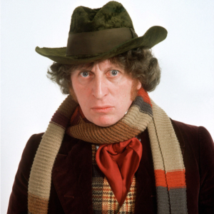

Portrayed by Tom Baker
|  | Thomas Stewart "Tom" Baker (born 20 January 1934) is an English actor. He is best known for his role as the fourth incarnation of the Doctor in the science fiction television series Doctor Who, which he played from 1974 to 1981. |